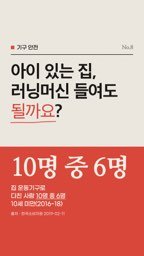
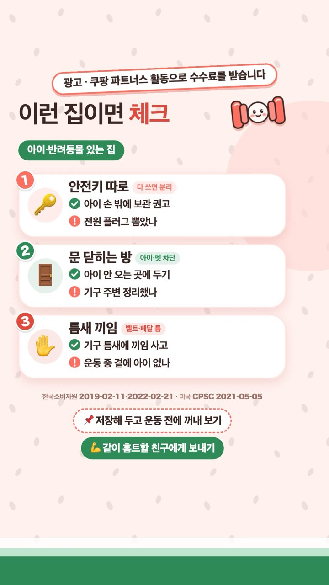

8번 영상
아이 있는 집, 러닝머신 들여도 될까요?
쿠팡 링크는 아직 준비 중이에요. 아래 비교는 지금 바로 읽을 수 있어요.
아이·펫 있는 집 체크 3개
집 운동기구로 다친 사람 10명 중 6명 10세 미만(2016~18) (한국소비자원 2019-02-11)
이런 집이면 체크
아이·반려동물 있는 집
- 안전키 따로 (다 쓰면 분리)
- ✔ 아이 손 밖에 보관 권고
- ⚠ 전원 플러그 뽑았나
- 문 닫히는 방 (아이·펫 차단)
- ✔ 아이 안 오는 곳에 두기
- ⚠ 기구 주변 정리했나
- 틈새 끼임 (벨트·페달 틈)
- ✔ 기구 틈새에 끼임 사고
- ⚠ 운동 중 곁에 아이 없나
한국소비자원 2019-02-11·2022-02-21 · 미국 CPSC 2021-05-05
